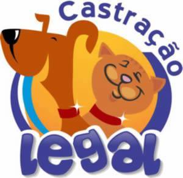

Alimentação Natural
Alimentação Natural O cuidado com a Alimentação é muito importante para garantir a saúde de todos, inclusive do seu animal de estimação. Hoje estamos mais atentos, deixando de lado os produtos industrializados, evitando transgênicos, corantes, conservantes e optando por alimentos naturais e mais saudáveis no dia a dia. A obesidade também é uma doença comum nos cães e esse hábito também tem causado mudança na alimentação dos pets: cada vez mais estamos substituindo a ração industrializada por algo caseiro.
A obesidade também é uma doença comum nos cães e esse hábito também tem causado mudança na alimentação dos pets: cada vez mais estamos substituindo a ração industrializada por algo caseiro.
Voltar
Castração Legal
Voltar
Dados do propriétarioA Domicilio
Veterinário no conforto de seu lar! Aproveite os benefícios do veterinário em domicílio com toda a assistência necessária. O veterinário que atende em casa proporciona menor estresse ao animal e maior comodidade. Agende uma consulta já. Atendimento emergencial. Serviços: Consulta Domiciliar, Exames.
Voltar
Serviços
- VETERINÁRIO A DOMICILIO
- VETERINÁRIO CLINICO GERAL
- VETERINÁRIO ORTOPEDISTA
- VETERINÁRIO CARDIOLOGISTA
- VETERINÁRIO ENDOCRINOLOGISTA
- VETERINÁRIO CLINICO E CIRURGIÂO DE PEQUENOS ANIMAIS
- VETERINÁRIO APULCULTURA/FISIOTERAPIA
Voltar